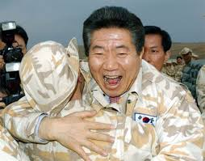

- 약력
- 일생
- 평가
평가

능력을 우선시하는 인사 기용 성향이 있었다. 노무현 본인도 대선 출마를 결심한 후 국정 전반에 대해 다시[1] 공부해, 후보자 연설문의 격까지 한층 발전했던[2] 걸 겪어보기도 했던 만큼, 마찬가지로 부단히 노력하며 실력과 성과를 올린 사람들이 중용되었다.
- 사례1. 이용섭 국세청장. 지방대 출신으로[3] 행정고시 합격 후 주로 재정경제부에서 일하는 중에도 꾸준히 연구하고 고민했던 부분을 관세청장 시절 실천했던 게 성과를 거두며 안팎의 호평을 받은 덕분에, 노 대통령 캠프와 이렇다 할 연결고리가 없었음에도 참여정부 출범과 동시에 국세청장으로 발탁되었다.
- 사례2. 고건 전 총리. 박정희 정부 시절부터 이명박 정부까지 총 8명의 대통령이 중용한 유능한 인사로, 서울시장과 같은 여러 차례의 행정직을 통해 '행정의 달인(master)'이라는 별명을 얻었을 만큼 해당 분야에서 인정받는 능력자였다. 실제로 고건 총리가 대선 후보로 떠오르기 전까지 파격적이고 모험적인 노무현과 안정적인 고건 양자 간의 관계는 상보적이었다. 여기엔 노무현이 실질적인 권한 행사를 할 수 있게끔 힘을 실어준 탓도 있다. 특히 탄핵이라는 초유의 사태 당시에도 2개월 동안 이라크 파병과 같은 굵직한 이슈를 무리없이 다루며 안정적인 행정을 펼친 부분은 아직까지도 두고두고 회자되는 부분.[4]
한때 "통일민주당의 노무현, 평화민주당의 이해찬"이라 일컬어질 만큼 달변으로 유명했던 이해찬 전 총리도[5] 참여정부 출범 후 고건 총리의 후임으로 발탁돼, 노무현 대통령이 중시한 권력 분산 기조의 수혜를 입으며 실세 국무총리라는 평을 받을 만큼 활발하게 활동했다. 대부분의 정부에서 총리는 그저 대통령의 수발이나 드는 존재처럼 기능하는 경우가 많은 것을 생각하면 큰 파격이다.
2001년 2월 한국-러시아 양국 정상회담 성명을 발표 당시, 미국의 국가미사일방어(NMD) 체제를 반대하는 의미로 읽힐 수 있는 내용이[6] 들어간 것에 대한 책임을 치고 차관 자리에서 물러난 반기문을 다시 외교부 장관으로 입각시킨다. 2007년 반기문이 UN 사무총장 선거에 출마했을 때는, 반기문이 외교부 장관 신분으로 선거운동을 할 수 있도록, 후임 외교부 장관을 들이지 않은 상태에서 업무를 봤으며, 언론에 특정 시점까지 보도를 유예해달라고 '시한부 보도유보'(엠바고)를 2차례 요청하기도 하였다. 자주(自主) 외교의 기치를 올린 참여정부에서 친미 성향이 강한 정통 외교부 관료를 발탁한 일이 파격이라는 평이나, 노무현의 연설문 작성을 담당한 강원국의 말에 따르면 대통령의 질문에 막힘없이 대답할 수 있는 국무위원 중 한 사람으로, 외교관으로서 실력은 확실했던 것으로 보인다.